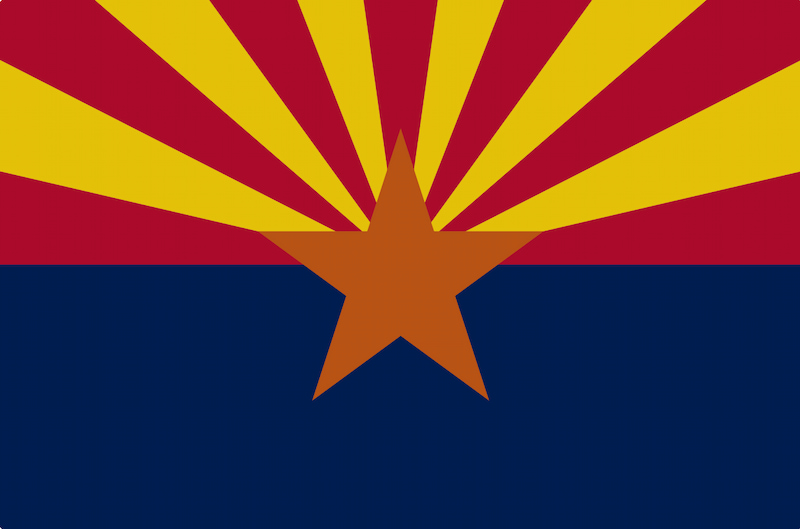
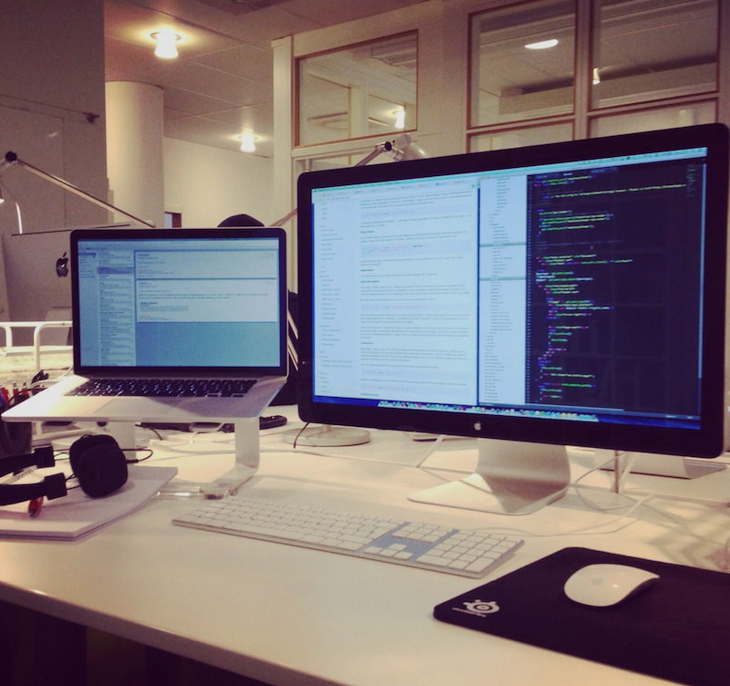

Neal Kammeyer
About Me
Hello! My name is Neal Kammeyer. I was born and raised in Las Vegas, Nevada, and my family and I currently live in Hunt, Arizona. I have worked for Apple for over 10 years and currently work as a back office administrator. My wife and kids keep me busy between life on our 80-acre ranch, sports, and multiple leadership callings.
Arizona, USA

Arizona is the 48th state in the Union and achieved statehood on February 14, 1912. It was the last state in the contiguous United States to be admitted. It is known as the "Grand Canyon State". Some known locations and landmarks include the Grand Canyon National Park, Monument Valley, Phoenix, and Sedona. I live in the White Mountains region between Snowflake and St. Johns, which isn't far from the Petrified Forest National Park.
Web Dev Resources
